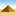

Ptah
This article includes a list of references, but its sources remain unclear because it has insufficient inline citations. (September 2017) (Learn how and when to remove this template message) |
| Ptah | |||||
|---|---|---|---|---|---|
 Ptah, in the form of a mummified man, standing on the symbol for Ma'at, holding a scepter or staff that bears the combined ankh-djed-was symbols | |||||
| Name in hieroglyphs |
| ||||
| Major cult center | Memphis | ||||
| Symbol | the djed pillar, the bull | ||||
| Parents | none (self-created or un-created) | ||||
| Consort | Sekhmet and Bast | ||||
| Offspring | Nefertem, Maahes | ||||
| Part of a series on |
| Ancient Egyptian religion |
|---|
 |
|
Beliefs |
|
Practices |
|
Locations |
|
|
Related religions |
|  Ancient Egypt portal |
In Egyptian mythology, Ptah /ˈtɑː/[1] (Ancient Egyptian: ptḥ, reconstructed [piˈtaħ]; Ancient Greek: Φθά; Coptic: ⲡⲧⲁϩ)[2] is the demiurge of Memphis, god of craftsmen and architects. In the triad of Memphis, he is the husband of Sekhmet and the father of Nefertum. He was also regarded as the father of the sage Imhotep.
Origin and symbolism[edit]

Ptah is an Egyptian creator god who existed before all other things and, by his will, thought the world into existence. It was first conceived by Thought, and realized by the Word: Ptah conceives the world by the thought of his heart and gives life through the magic of his Word. That which Ptah commanded was created, with which the constituents of nature, fauna, and flora, are contained. He also plays a role in the preservation of the world and the permanence of the royal function.
In the Twenty-Fifth Dynasty, the Nubian pharaoh Shabaka would transcribe on a stela known as the Shabaka Stone, an old theological document found in the archives of the library of the temple of the god at Memphis. This document has been known as the Memphite Theology, and shows the god Ptah, the deity responsible for the creation of the universe by thought and by the word.
Ptah is the patron of craftsmanship, metalworking, carpenters, shipbuilders, and sculpture.
He bears many epithets that describe his role in Ancient Egyptian religion and its importance in society at the time:
- Ptah the beautiful face
- Ptah lord of truth
- Ptah master of justice
- Ptah who listens to prayers
- Ptah master of ceremonies
- Ptah lord of eternity
Representations and hypostases[edit]
Like many deities of ancient Egypt he takes many forms, through one of his particular aspects or through syncretism of ancient deities of the Memphite region. Sometimes represented as a dwarf, naked and deformed, his popularity would continue to grow during the Late Period. Frequently associated with the god Bes, his worship then moved beyond the borders of Egypt and was exported throughout the eastern Mediterranean. Through dissemination by the Phoenicians, we find figures of Ptah in Carthage.
Ptah is generally represented in the guise of a man with green skin, contained in a shroud sticking to the skin, wearing the divine beard, and holding a sceptre combining three powerful symbols of ancient Egyptian religion:
These three combined symbols indicate the three creative powers of the god: power (was), life (ankh) and stability (djed).

From the Old Kingdom, he quickly absorbs the appearance of Sokar and Tatenen, ancient deities of the Memphite region. His form of Sokar is found contained in its white shroud wearing the Atef crown, an attribute of Osiris. In this capacity, he represents the patron deity of the necropolis of Saqqara and other famous sites where the royal pyramids were built. Gradually he formed with Osiris a new deity called Ptah-Sokar-Osiris. Statuettes representing the human form, the half-human, half-hawk form, or simply the pure falcon form of the new deity began to be systematically placed in tombs to accompany and protect the dead on their journey to the West.
His Tatenen form is represented by a young and vigorous man wearing a crown with two tall plumes that surround the solar disk. He thus embodies the underground fire that rumbles and raises the earth. As such, he was particularly revered by metalworkers and blacksmiths, but he was equally feared because it was he who caused earthquakes and tremors of the earth's crust. In this form also, Ptah is the master of ceremonies for Heb Sed, a ceremony traditionally attesting to the first thirty years of a pharaoh's reign.
The god Ptah could correspond with the sun deities Re or Aten during the Amarna period, where he embodied the divine essence with which the sun god was fed to come into existence, that is to say to be born, according to the Memphite mythological/theological texts. In the holy of holies of his temple in Memphis, as well as in his great sacred boat, he drove in procession to regularly visit the region during major holidays. Ptah was also symbolized by two birds with human heads adorned with solar disks, symbols of the souls of the god Re: the Ba. The two Ba are identified as the twin gods Shu and Tefnut and are associated with the djed pillar of Memphis.[3]
Finally, Ptah is embodied in the sacred bull, Apis. Frequently referred to as a herald of Re, the sacred animal is the link with the god Re from the New Kingdom. He even received worship in Memphis, probably at the heart of the great temple of Ptah, and upon the death of the animal, was buried with all the honours due to a living deity in the Serapeum of Saqqara.
Scholars have also associated Ptah with the Mandaean god Ptahil outside of Egypt due to their somewhat similar features and closely related names.[4]
,_N372.2.jpg)
Development of the cult[edit]

As god of craftsmen, the cult of the god Ptah quickly spread throughout Egypt. With the major royal projects of the Old Kingdom, the high priests of Ptah were particularly sought after and worked in concert with the vizier, filling the role of chief architects and master craftsmen, responsible for the decoration of the royal funerary complexes.
In the New Kingdom, the cult of the god would develop in different ways, especially in Memphis, his homeland, but also in Thebes, where the workers of the royal tombs honoured him as patron of craftsmen. For this reason, the oratory of Ptah who listens to prayers was built near the site of Deir el-Medina, the village where the workers and craftsmen were housed. At Memphis, the role of intercessor with humans was particularly visible in the appearance of the enclosure that protected the sanctuary of the god. Large ears were carved on the walls, symbolizing his role as god who listens to prayers.
With the Nineteenth Dynasty, his cult grew and he became one of the four great deities of the empire of Ramesses. He was worshipped at Pi-Ramesses as master of ceremonies and coronations.
With the Third Intermediate Period, Ptah returned to the centre of the monarchy where the coronation of the pharaoh was held again in his temple. The Ptolemies continued this tradition, and the high priests of Ptah were then increasingly associated with the royal family, with some even marrying princesses of royal blood, clearly indicating the prominent role they played in the Ptolemaic court.
Main places of worship[edit]
| Temple dedicated to | Location |
|---|---|
| Ptah | Pi-Ramses |
| Ptah | Memphis |
| Ptah who listens to prayers | Memphis |
| Ptah who is south of his Wall | Memphis |
| Ptah-Sokar | Abydos |
| Ptah-Sokar | Kom el-Hettan (Thebes) |
| Ptah who listens to prayers | Deir el-Medina (Thebes) |
| Ptah | Karnak (Thebes) |
| Ptah | Gerf Hussein (Nubia) |
| Ptah lord of truth | Abu Simbel (Nubia) |
Photographs[edit]

Head of the god Ptah. 18th Dynasty. State Museum of Egyptian Art, Munich

Crenelated model tower depicting god Ptah holding a was-sceptre before an offering table, on the reverse is a woman (? high priestess) in adoration before ears symbolizing the deity, 18th Dynasty, from Harageh, Egypt, the Petrie Museum of Egyptian Archaeology, London

Stela of Irinefer, Servant in the Place of Truth. 19th Dynasty. From Tomb 290 at Deir el-Medina, Egypt. The Petrie Museum of Egyptian Archaeology, London

Profile of the god Ptah - Relief of the small temple of Hathor at Memphis

Colossal triad representing Ptah-Ramses II-Sekhmet – Gardens of the Egyptian Museum of Cairo

Pectoral of Tutankhamun representing the young king between the goddess Sekhmet and Ptah – Egyptian Museum of Cairo

Statuette of Ptah-Sokar-Osiris – The Louvre

Votive stele dedicated to the god Ptah in the temple of Deir el-Medina. New Kingdom, XX Dynasty, c. 1150 B.C.


{kind=link}
Legacy[edit]
The English name Egypt derives from an ancient Egyptian name for Memphis, Hikuptah, which means "Home of the Soul of Ptah". This word entered Ancient Greek as Αἴγυπτος (Aiguptos), which entered Latin as Aegyptus, and which developed into English as Egypt.
Ptah is one of the deities mentioned in Giuseppe Verdi's opera Aida. He is invoked in a chorus, "Possente Fthà" ("O Mighty Ptah"), in Act 1, scene 2; this chorus is reprised as "Immenso Fthà" ("Almighty Ptah"), at the end of the opera as the protagonists Aida and Radamès die.
See also[edit]
References[edit]
- ^ "Ptah". Lexico UK Dictionary. Oxford University Press.
- ^ Ancient Egyptian, a linguistic introduction, pg 34
- ^ Cf. J. Berlandini, Contribution à l'étude du pilier-djed memphite, p.23-33 et pl. 1 A & pl. 2 A
- ^ Thacker, Thomas (April 1956). "The Relationship of the Semitic and Egyptian Verbal Systems". Cambridge University Press: 102. Cite journal requires
|journal=(help)
Literature[edit]
- Allen, James P. Genesis in Egypt: The Philosophy of Ancient Egyptian Creation Accounts. New Haven, 1988.
- Gunn, Battiscombe G. Instruction of Ptah-Hotep and the Instruction of Ke'Gemni: The Oldest Books in the World. 1998 Google books
- Rothöhler, Benedikt. Neue Gedanken zum Denkmal memphitischer Theologie. Heidelberg, 2006 www.ub.uni-heidelberg.de/archiv/7030
- Sandman Holmberg, Maj. The God Ptah. C. W. K. Gleerup, 1946.
- Thompson, Dorothy J. Memphis Under the Ptolemies, Second Edition. Princeton, 2012.
- Zivie, Alain-Pierre. Memphis et ses nécropoles au Nouvel Empire. Éditions du CNRS, 1988
External links[edit]
 Media related to Ptah at Wikimedia Commons
Media related to Ptah at Wikimedia Commons